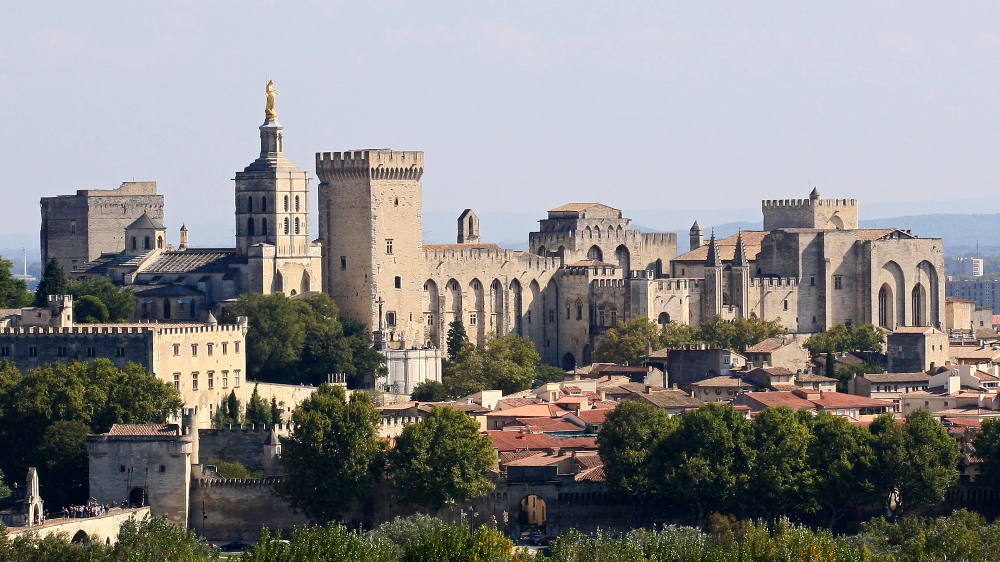
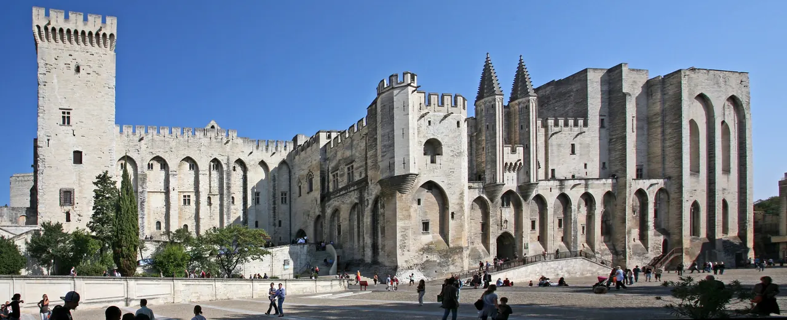
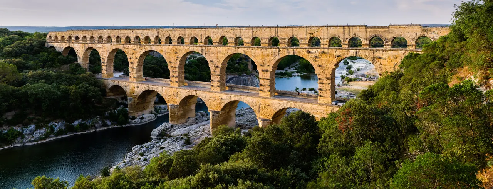
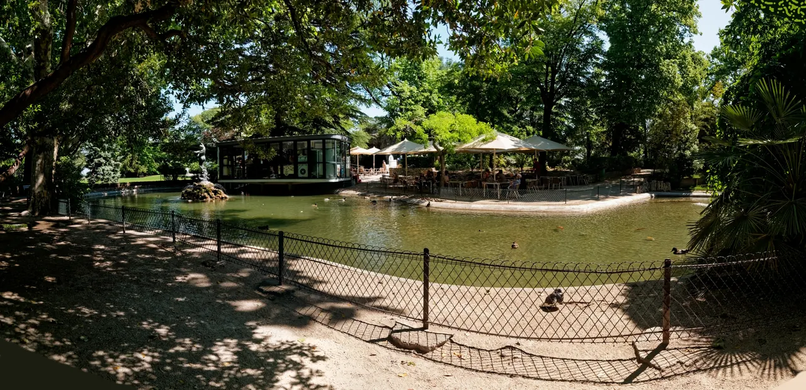
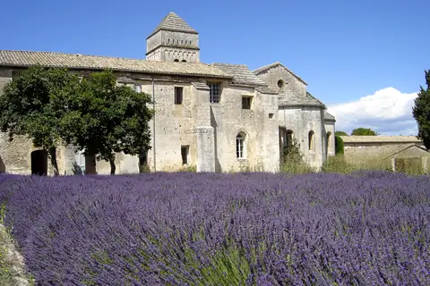
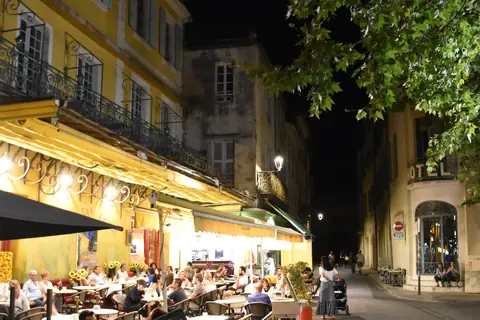
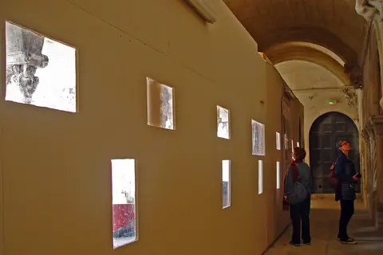
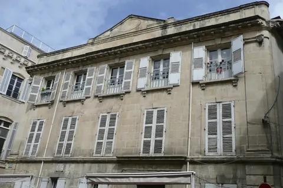
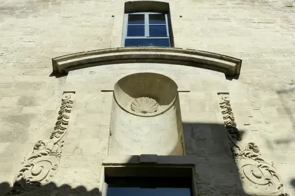

{kind=link}

Les Halles
아비뇽의 실내 중앙시장이다.

| 항목 | 평가 |
|---|---|
| 여행 적합도 | ★★★★★ Jason·Julia의 생활형 여행에 최적화 |
| 예산 체감 | 중 |
| 일정 강도 | 근교일 2회로 높음 |
| 예약 핵심 | 숙소주차·Palais·TGV 연결 |
| 우천 전환 | Palais·Arles 실내·회랑 중심, Pont 축소 |
여행의 역할: 뤼베롱의 농가와 언덕마을을 떠나 론강 서부 프로방스로 이동하는 구간이다. 아비뇽에서는 교황궁과 성벽도시를 이해하고, 근교에서는 위제스와 퐁뒤가르, 아를의 로마유적·중세·반 고흐·생활도시를 경험한다. Les Baux·Saint-Rémy·Glanum은 Arles를 완전히 교체하는 선택 대안으로 보존한다.
여행자 기준: Jason·Julia는 새로운 도시와 지역을 방문하는 경험을 미술관·박물관보다 선호한다. 따라서 Palais des Papes는 도시 정체성을 이해하는 핵심 기념물로 유지하되, Petit Palais·Collection Lambert·Calvet 등은 비·피로·특별행사에 따른 선택 모듈로 둔다. Julia의 수영은 선택 일정이며 숙소 선정조건이 아니다.
| 장소·경험 | 판단 | 이유 |
|---|---|---|
| Collection Lambert | 대체 | 현대미술 관심이 강할 때만 |
| LUMA·Alyscamps·고대박물관 | 선택 | Arles 핵심 동선에 모두 더하면 과밀하므로 한 곳만 |
| Nîmes 추가 | 비추천 | Pont du Gard와 함께 넣으면 도시수집형 일정이 됨 |
아비뇽의 실내 중앙시장이다.

1273년부터 교황들은 로마에서 안전하지도 자유롭지도 독립적이지도 못하게 되자 그곳을 떠났다.

전설에 따르면 12세기에 비바레 출신의 젊은 목동 베네제가 신의 명령으로 다리를 지었다.

사실 이것은 다리가 아니라, 우제스의 외르 수원에서 고대 로마 도시 '네마우수스'(오늘날의 님)로 물을 나르던 수도교의 잔해다.

교황궁이 올라앉은 바위다.

우제스의 첫 정착은 1세기로 거슬러 올라간다.

알피유 한복판의 거대한 카리에르 데 뤼미에르는 세계에서 유일한 멀티미디어 쇼를 연다.

생폴드모졸 바로 옆의 갈로로마 도시 유적이다.

석회암 바위산 위의 요새 마을이다.

알피유 기슭, 글라눔 로마 유적 옆에 서기 1000년경부터 수도원과 로마네스크 회랑이 있었고 여러 수도회가 이어졌다.

유명인보다

고대 포룸의 중심이 오늘날 카페 광장으로 바뀐 곳이다.

로마네스크와 고딕 회랑이 이어지는 중세의 핵심이다.

반 고흐 원작만을 기대하는 기념관이 아니라 동시대 작가와의 대화를 만드는 전시공간이다.

론강과 가까운 생활 골목이다.
| 장소 | 등급 | Jason·Julia에게 추천하는 이유 |
|---|---|---|
| Palais des Papes | 필수 | 아비뇽의 도시정체성과 권력구조를 이해하는 핵심 |
| Les Halles | 필수 | 관광도시 안의 실제 식문화와 장보기 |
| Rocher des Doms | 우선 추천 | Rhône·Pont·Villeneuve를 한 번에 조망 |
| Pont Saint-Bénézet | 우선 추천 | 도시·강·교역의 관계를 상징 |
| Rue des Teinturiers | 우선 추천 | 축제도시 이전의 수공업·생활골목 |
| Uzès 구시가지·Place aux Herbes | 우선 추천 | 금요일에도 실행 가능한 지역도시와 생활광장 경험 |
| Pont du Gard | 필수에 가까운 우선 추천 | 로마공학과 자연경관의 결합 |
| Arles·Arènes·Théâtre antique | 필수 | 로마유적과 생활도시가 분리되지 않는 핵심 당일치기 |
| Saint-Trophime 또는 Fondation Vincent van Gogh | 우선 추천 | 중세와 반 고흐 중 관심사에 따라 하나를 깊게 선택 |
| Les Baux·Saint-Rémy·Glanum | 대체 | Arles를 완전히 교체하는 Alpilles 선택안 |
| Carrières des Lumières | 대체 | Alpilles 선택안에서 악천후·몰입형 전시 선호 시 |
| Petit Palais | 대체 | 비·폭염 시 중세회화 60분 |
긴 코스요리 금지 — 교황궁 2시간 뒤 휴식 필수
점심·카페 휴식 60–75분 보호
| 항목 | 확정·권장 내용 |
|---|---|
| 체류 | 2026년 9월 16일 수요일 체크인 → 9월 20일 일요일 체크아웃, 4박 |
| 기본 일정 | 9/16 Luberon→Avignon 정착 / 9/17 Avignon 핵심 / 9/18 Uzès+Pont du Gard / 9/19 Arles / 9/20 차량반납·Lyon TGV |
| 여행 주제 | 교황도시·성벽·론강 / 로마 수도교 / Arles의 로마·중세·반 고흐·생활도시 |
| 최우선 숙소권 | Porte Saint-Michel–Gare Centre–Corps Saints 1순위. Carmes–Université 동쪽 성벽권 2순위 |
| 숙박 형태 | 주방·세탁이 있는 아파트호텔 또는 주차가 확정되는 호텔. 성벽 깊숙한 곳보다 차량진입·야간귀가·TGV 이동 편의 우선 |
| 계획 숙박예산 | 계획가(2026-08 조사) — 2인 4박 €520–900 실속·중간급 목표. 넓은 4성급 객실·프리미엄 아파트는 €900–1,250 범위 가능. 실시간 총액은 예약 시 재확인 |
| 필수 | Les Halles·Palais des Papes·Place du Palais·Rocher des Doms·Pont Saint-Bénézet·Uzès 구시가지·Pont du Gard·Arles |
| 선택 | Villeneuve-lès-Avignon / Fondation Vincent van Gogh / Les Baux·Saint-Rémy·Glanum 대체일 |
| 음식 | Halles 장보기·간단 점심, 저녁은 Avignon intra-muros 레스토랑. 당일치기 날 점심은 시장·피크닉·마을 비스트로 |
| 운동 | Jason: 성벽 남쪽·Rhône·Île de la Barthelasse 러닝 1회. Julia: 시립수영장 선택, 숙소 조건과 분리 |
| 행사 | 9/19–20 Journées européennes du patrimoine. Arles 세부 프로그램 출발 전 재확인 |
| 피로도 | 도시일 3, Uzès·Pont 4, Arles 4, 이동일 4 |
| 주요 위험 | 성벽 내부 차량진입·주차, 주말 JEP 혼잡, 당일치기 차량 내 짐, 강한 미스트랄, 유적지 노출·계단, TGV역 반납 지연 |
9/16 Luberon 체크아웃 → Avignon 체크인·생활권 적응
↓
9/17 Les Halles → Palais des Papes → Rocher des Doms → Pont Saint-Bénézet
↓
9/18 Uzès 구시가지 → Pont du Gard → 일몰조명 선택
↓
9/19 Arles: Arènes → Théâtre antique → Forum → Saint-Trophime → La Roquette
↓
9/20 Avignon TGV 렌터카 반납 → Lyon Part-Dieu
| 날짜 | 테마 | 핵심 방문지 | 피로도 |
|---|---|---|---|
| 9/16 수 | 뤼베롱에서 교황도시로 | 체크아웃·체크인·성벽 안 가벼운 산책 | 3/5 |
| 9/17 목 | 아비뇽 핵심도시일 | Les Halles·Palais·Rocher·Pont·구시가지 | 3/5 |
| 9/18 금 | 가르 지방과 로마공학 | Uzès 구시가지·Pont du Gard | 4/5 |
| 9/19 토 | Arles 당일치기 | Arènes·Théâtre·Forum·Saint-Trophime·La Roquette | 4/5 |
| 9/20 일 | 차량반납과 리옹 이동 | Avignon TGV·Lyon Part-Dieu | 4/5 |
| --- |
| Day | 날짜 | 점심 | 저녁 |
|---|---|---|---|
| 19 | 9/16 수 | 이동 중 간단식 | 아비뇽 첫 저녁 |
| 20 | 9/17 목 | Les Halles | 성벽 안 식당 |
| 21 | 9/18 금 | Uzès 빵집·비스트로 또는 피크닉 | 아비뇽 |
| 22 | 9/19 토 | Arles 구시가지 비스트로 | 프로방스 마지막 저녁 |
| 23 | 9/20 일 | 이동 중 또는 TGV | 리옹 도착 후 |
Day 21·22 점심은 미리 정하라. 종일 밖에 있으며 JEP 주말의 혼잡과 임시 운영이 생길 수 있다.